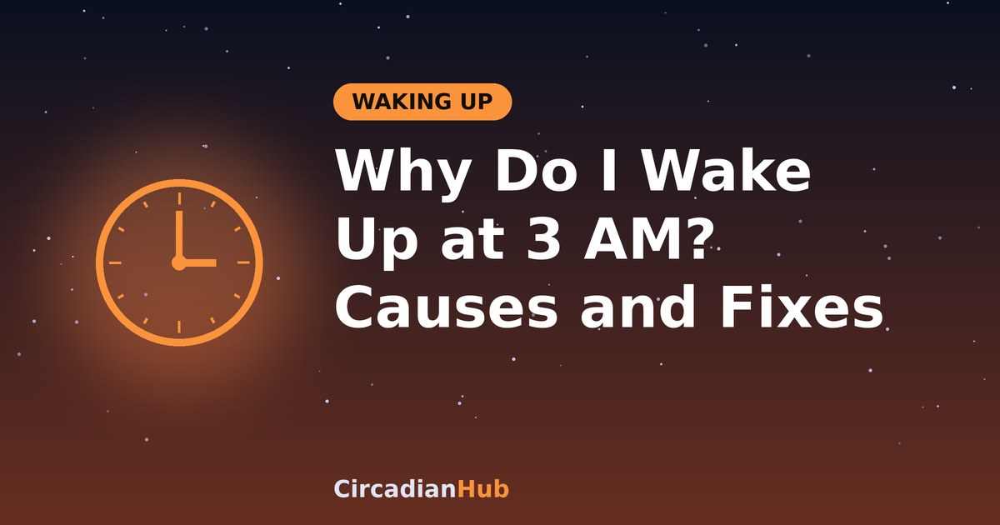

Why Do I Wake Up at 3 AM? Common Causes and What Helps

You fall asleep without trouble, then your eyes open in the dark. The clock says 3 AM. Your mind is alert, your body is tired, and the next few hours stretch ahead. Waking in the small hours is one of the most common sleep complaints, and in most cases it has an ordinary explanation. This guide explains why it happens, how to tell whether it is normal, what to do in the moment, how to reduce it over time, and when it is worth speaking to a doctor.
Is waking at night normal?
Yes, to a point. Sleep experts note that everyone has brief, unnoticed awakenings through the night, and waking is very common. In one large US survey, about a third of adults woke at least three nights a week and roughly one in four woke every night, and many of them had no other sleep complaints. If you wake, turn over and drift off again, that is normal sleep, and you will probably not remember it in the morning. The problem starts when you wake and stay awake, or when it happens often enough to leave you tired in the day. Sleep specialists call trouble staying asleep sleep maintenance insomnia, and surveys suggest that roughly one in five adults in the United States has difficulty staying asleep.
Why the small hours?
There is nothing magical about 3 AM, and it is not the same hour for everyone. Some online claims say that waking at a particular hour means a particular organ is under stress, but there is no scientific support for that. What is true is that the second half of the night is a lighter and more fragile time for sleep:
- Deep sleep comes first. Most deep, slow-wave sleep happens in the first few hours. As the night goes on, sleep becomes lighter and REM sleep takes up more of each cycle. Lighter sleep is easier to interrupt. Our article on 90-minute sleep cycles explains how this pattern works.
- Sleep pressure has dropped. After several hours asleep, much of the tiredness that built up during the day has been cleared, so it is easier to surface.
- Your body is cooling and waking. Your core temperature reaches its lowest point in the early morning, and your body clock begins preparing you for the day, with changes in hormones and alertness that can make you more likely to wake.
Common causes
Usually more than one thing is involved. The table lists the most common, with clues and what tends to help.
| Cause | Clues | What may help |
|---|---|---|
| Stress and anxiety | Racing thoughts, replaying the day, planning tomorrow | Write a worry list earlier in the evening, use relaxation techniques, and see the tips below |
| Alcohol in the evening | Fall asleep easily but wake in the second half of the night, often sweaty or with a fast heart rate | Cut back or stop drinking for a few hours before bed. See alcohol and REM sleep |
| Caffeine too late | Light, broken sleep, more so after afternoon or evening coffee | Stop at least six hours before bed. See caffeine and sleep |
| Bedroom too warm, bright or noisy | Waking hot, or at the same time as a noise, like traffic or a partner | Keep it cool, dark and quiet. See ideal bedroom temperature |
| Needing the toilet | Waking with a full bladder, especially after evening drinks | Have fewer large drinks in the last hour or two. If it happens two or more times a night regularly, see a doctor |
| Hot flushes and night sweats | Waking hot or drenched, often during perimenopause or menopause | Layer the bedding so you can adjust it, use a fan and speak to a doctor about treatment |
| Irregular schedule or sleep debt | Different wake times, late weekends, recent travel or shift work | Keep a steady wake time. See sleep debt and jet lag |
| Sleep apnoea | Loud snoring, gasping or choking, pauses in breathing seen by a partner, morning headaches, daytime sleepiness | See a doctor, since it needs assessment and treatment |
| Acid reflux | Heartburn or a sour taste, worse when lying down or after late meals | Avoid large late meals, and talk to a doctor or pharmacist if it is frequent |
| Pain or restless legs | Discomfort or an urge to move the legs that eases when you move | Follow your doctor's advice on managing it |
| Medication or other substances | Waking began after a new medicine, supplement or change in dose | Ask your doctor or pharmacist. Do not stop prescribed medicine on your own |
| Low mood | Waking very early and unable to get back to sleep, with low mood, loss of interest or hopelessness | Speak to a doctor. This is worth taking seriously |
What to do when you wake up
The advice from sleep specialists is fairly consistent, and much of it is about not making things worse.
- Do not watch the clock. Turn the clock away and avoid checking your phone. Counting the hours you have left raises stress, and screen light makes you more alert. See our article on blue light and melatonin.
- Get comfortable. Use the toilet if you need to, and check that the room is cool and dark and that you are not too hot or cold.
- Relax your body. Try progressive muscle relaxation: tense each muscle group gently for about five seconds, release it, and move on, breathing slowly between groups. Skip any muscle that hurts.
- Quiet a busy mind. Our guide to the cognitive shuffle gives your mind something gentle to do instead of worrying.
- Get up if you are not drifting off after about 20 minutes. A rough guess is fine. Go to another room, sit in a comfortable chair in dim light and do something calm, such as reading a paper book or listening to quiet music. Avoid work, bills, screens and bright light. Go back to bed when you feel sleepy. This helps your brain link the bed with sleep and not with lying awake.
- Keep your normal schedule tomorrow. Do not sleep in, nap or go to bed early the next night. You may feel more tired for a day, but the extra sleep pressure helps the next night.
What to change during the day and evening
Night-time tricks help, but the biggest gains usually come from the hours before bed and from your routine.
- Fix your wake time. A regular wake time, even on days off, anchors your body clock. See our pre-bed routine guide and the CircadianHub calculator for planning a consistent bedtime.
- Get morning light. Daylight soon after waking strengthens your body clock and helps night sleep. See morning sunlight and your circadian rhythm.
- Set a caffeine cutoff and go easy on alcohol. Both are common culprits for waking in the second half of the night.
- Give worries a slot. Spend 10 minutes in the early evening writing down tasks and concerns, and what the next step is, so your mind does not do it at 3 AM.
- Move your body in the day. Regular exercise helps sleep for many people, though very intense exercise right before bed suits some people less.
- Watch late meals and drinks. A heavy meal close to bed can cause reflux, and large drinks can send you to the toilet.
- Be careful with naps. A short early-afternoon nap is fine for most people, but long or late naps can make night sleep lighter. See best nap length.
- Make the bedroom work. Cool, dark and quiet, with a comfortable bed. See sleep hygiene vs sleep quality.
Keep a simple sleep diary
If you cannot work out the cause, a two-week diary can reveal patterns. Each morning note your bedtime, roughly what time you woke in the night, how long you were awake, and how you feel. Also note caffeine, alcohol, late meals, stress, exercise, medication and anything unusual. You may find that the wake-ups cluster after drinking or after stressful days, which points you to the fix. A diary is also very useful if you later talk to a doctor.
When is it insomnia?
Doctors usually talk about chronic insomnia when trouble falling or staying asleep happens at least three nights a week, lasts for at least three months, and affects your days, for example through tiredness, poor concentration or low mood. It is common and treatable. Major medical guidelines recommend cognitive behavioural therapy for insomnia, often shortened to CBT-I, as the first treatment. It is a structured programme that changes habits and thought patterns around sleep, and it is generally preferred to sleeping pills for the long term. Ask your doctor about it.
When to see a doctor
Get urgent medical help if you wake with chest pain, severe difficulty breathing, a racing or irregular heartbeat that does not settle, or real confusion about where you are.
Make an appointment if you notice any of the following:
- Loud snoring with gasping, choking or pauses in breathing, or you fall asleep at inappropriate times in the day, including while driving.
- Waking to pass urine two or more times most nights.
- Drenching night sweats, particularly with fever, unexplained weight loss or other new symptoms.
- Low mood, loss of interest, hopelessness or anxiety that lasts, or waking very early and being unable to sleep again most days.
- Waking problems that occur at least three nights a week for a month or more, or that affect your work, driving, mood or relationships.
- A start to the problem after a new medicine or supplement.
- Pregnancy, if sleep is very broken or you have symptoms such as breathlessness or swelling.
If you ever have thoughts of harming yourself, please contact your local emergency number or a crisis line in your country straight away, or tell someone you trust. You do not have to cope with it alone.
Sleeping pills and supplements may seem like a quick fix, but they are not right for everyone and are not a long-term answer. Talk to a doctor or pharmacist before using them, and especially if you take other medication, drink alcohol, are pregnant or need to drive.
What if I work nights?
If you are a night worker, the small hours are a natural low point for alertness, and the issue is usually staying awake, not staying asleep. Our night shift nutrition guide covers the 3 AM slump at work. If you wake repeatedly during your daytime sleep, see how to sleep during the day and shift work sleep disorder.
Frequently asked questions
Why do I wake at the same time every night?
It is often a mix of your sleep cycle, your body clock and habit. A regular trigger such as alcohol wearing off, a noise, a warm room or an early-morning bladder signal can also be responsible. A diary helps to spot it.
Does waking at 3 AM mean something is wrong with my liver or another organ?
Not on its own. Claims that a specific waking time points to a specific organ have no scientific support. If you have other symptoms, or the problem persists, speak to a doctor rather than relying on a chart.
Should I stay in bed or get up?
Stay for about 20 minutes and try relaxing. If you are still wide awake, get up, do something quiet in dim light, and return when sleepy.
Is it okay to eat a snack?
If you are genuinely hungry, something small and light is fine. Avoid large meals, sugary foods and alcohol, and keep the lights low.
Will I be tired all day after waking at night?
Possibly, especially if you lost several hours of sleep. Stick to your normal routine, get daylight and avoid long naps. Our article on falling asleep faster has more habits that support a steady night.
Summary
- Brief wake-ups are normal, and the small hours are a light, easily disturbed part of the night.
- Common causes include stress, evening alcohol and caffeine, a warm or noisy room, an irregular schedule, and medical issues such as sleep apnoea, reflux or menopause.
- In the moment, do not watch the clock, relax, and get up after about 20 minutes if you are not drifting off.
- Keep your normal wake time the next day, and fix the cause with daytime habits.
- See a doctor if it happens at least three nights a week for a month or more, affects your days, or comes with warning signs.
Sources and further reading
Last updated: 1 October 2026. Links are general background reading from public-health organisations. How we write and update our guides.
Medical disclaimer: This article is for general information only and is not medical advice, and it cannot diagnose the cause of your sleep problems. If you have persistent night waking, excessive daytime sleepiness or any of the warning signs above, speak with a doctor or sleep specialist.